● 1分足のトレンド転換（下落→上昇）
← 手法のまとめにもどる例11：ロング2つと、ショート2つ
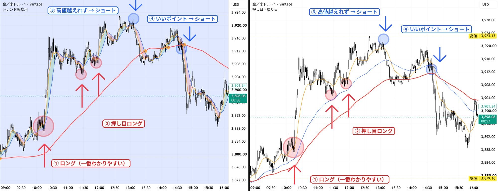
① 左の◎：ロング（一番わかりやすい）
- MAが3本そろって、明らかに上へ向かおうとしている。
② 押し目のロング
- 右のチャートで、100SMAで支えられた押し目。
③ 最初の青◎：ショート
- 高値を越えられなかった。
- 長期足で、反発しそう。
- ロングとの両建てかな。
④ 2つ目の青◎：ショート（すごくいいポイント）
- 200EMAで反発している。
- でも、100EMAに抑えられた。
- 25EMAにも、ヒゲで抑えられている。
- ここは、ショートを取るべき。
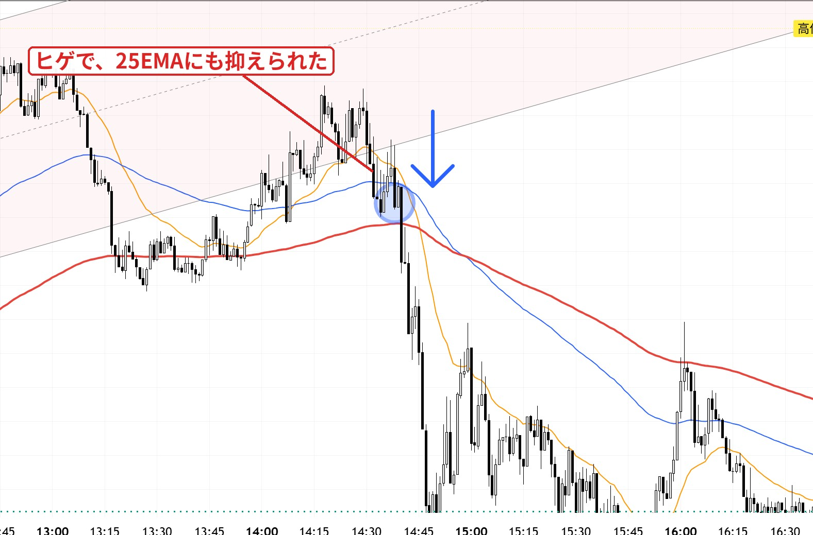
例10：3本が下落方向 → 戻りの25EMAでショート
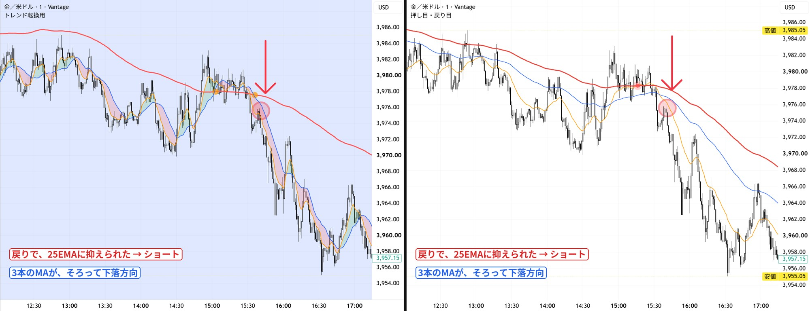
ショートしたい形
- 3本のMAが、そろって下落方向。
- 戻りで、25EMAに抑えられている。
例9：100EMAに抑えられたダブルトップ → ショート
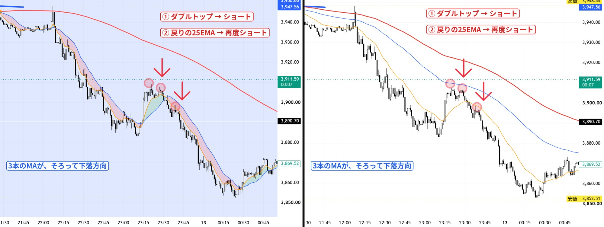
ショートしたい形
- 右のチャートで、100EMAに抑えられている。
- 100EMAは、右下がり。
- 3本のMAが、そろって下落方向。
- ダブルトップになっている。
入る所
- ① ダブルトップの所。
- ② もしくは、そのあとの戻りで、25EMAに抑えられた所。再度ショート。
ひとこと
- これも、今後は見逃したくない。
例8：200EMAに何度も抑えられる → ショート
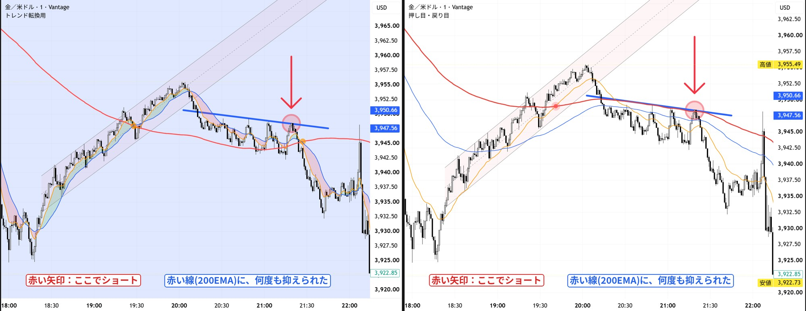
ショートしたい形
- 200EMAに、何度も抑えられている。
- MA（移動平均線）3本が、きれいにそろって、右下がり。
- 損切りが近いので、リスクリワードがいい。
ひとこと
- こういう所で、ショートを取りたい。
例7：レンジからのショートと、反発
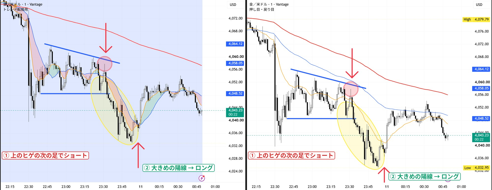
① 左の丸：レンジからのショート
- 100EMAに抑えられている。
- 200EMAも下向き。
- 入る場所：下ではなく、上のヒゲの次のローソク足。リスクリワードがすごくいい。
② 2つ目の矢印：ロングのサイン
- 下落がきれいだった。
- 200EMAから距離が離れているので、反発が入ってもおかしくない。
- それを否定する、大きめの陽線が出た。
例6：水平線を超えて、20SMAで支えられる
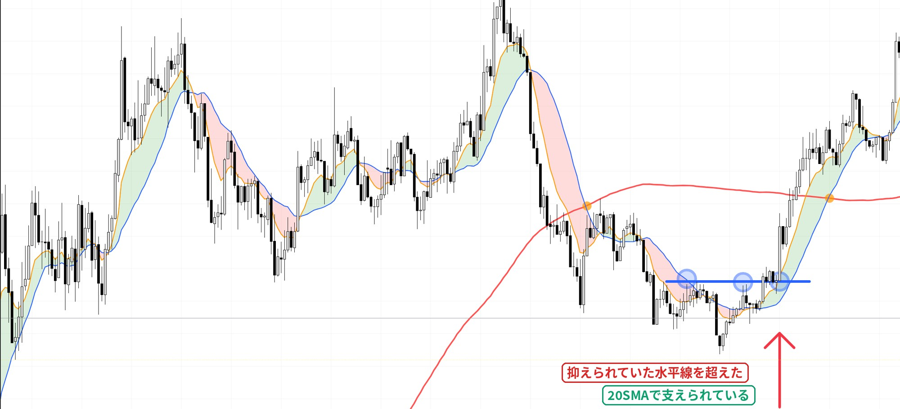
- 上がりきって、一旦売られてからのリバ。
- 後から言えたことだけど、抑えられていた水平線を超えて、20SMAで支えられている。
例5：200SMAが下向きのとき
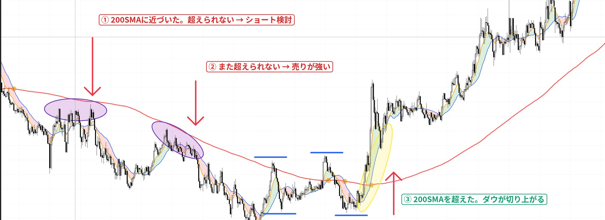
- 200SMAが下向きの場合は、近づいてきたら、ショートを検討する。
- 特に、複数回超えられない場合は、売りが強い。リスクリワードがいいヒゲの次の足などで、エントリー。
- 最後は、200SMAを超えてきて、ダウが切り上がっていきそう。上位足を見ても、エントリーできそうな関係値になっていると思う。
例4：角度が緩やか
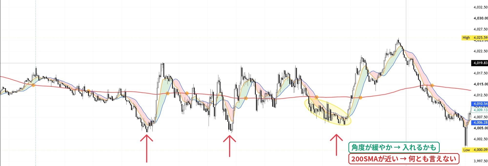
- ローソク足の角度が緩やかだと、入れるかもしれない。でも200SMAが近いから、何とも言えない。
例3：200SMAから遠い・近い
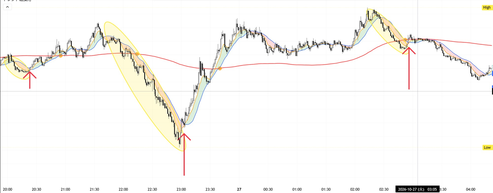
- これは顕著。
- きれいで、200SMAから距離があるときは、積極的に1ロットで攻める。
- 右側は200SMA付近だから、エントリーしない。
例2：収束して、一気に拡散
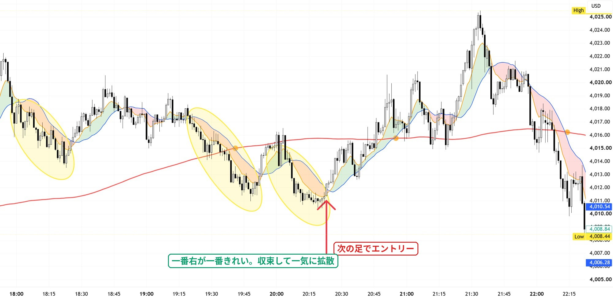
- きれいな形。9EMAに抑えられている。
- 陰線が小さくなり、陽線が混じってくる。ヒゲが出てくる。
- エントリー 次に大きい陽線が出たときに、次の足で入る。
- 黄色の3つのうち、一番右がきれい。収束して、一気に拡散の感覚。
例1：反発の始まり（見送りと、エントリー）
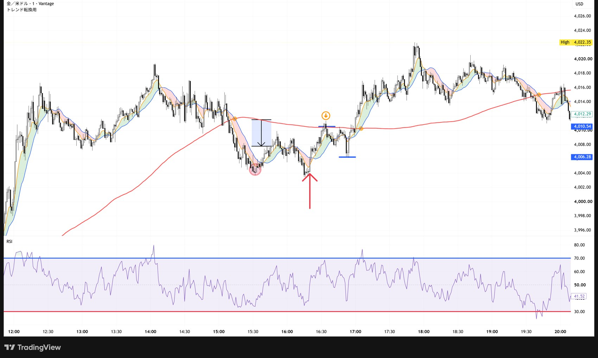
- 左の丸 見送り。ローソク足が汚い（ヒゲの多い陽線と陰線が混ざっている）。200SMAにも近い。
- 赤い矢印 エントリー。9EMAにそって落ちてきて、長い陽線が2本出た。
- 戦略 半分は赤線で利確。損切りを建値に移動。
① 最初に入る
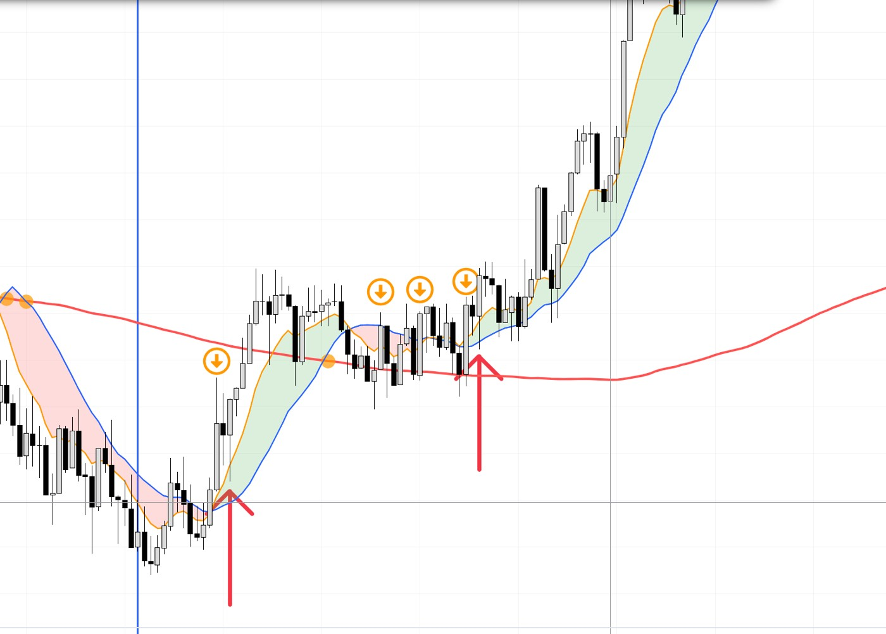
- 左の矢印 最初に入る。大きい陽線が出た。でもローソク足は汚いからスルーかも。
- 右の矢印 追加で入る。長い陽線で、上に抜けていく所。
最初に入った理由
- 実体の長い陽線が、3本続いた。買いが強い。
- 200に近いが、まだ押さえつけられていない。
- 200の下げが、緩やかだった。
損切り・追加
- 損切り：200のすぐ下。
- 追加：長い陽線が出て、上に抜けていく所。
② 追い玉と、天井
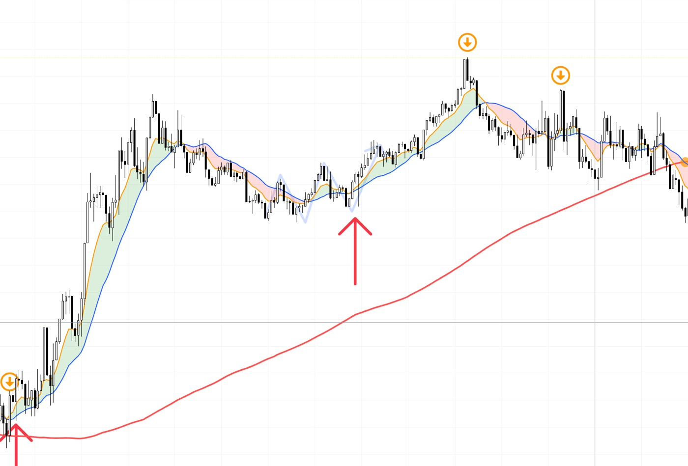
- 赤矢印 追い玉。押しで止まった所。
- 天井 4,019。上ヒゲが長く、RSIは80。
追い玉の理由
- ダウ理論：安値が切り上がった。
- 9が20の上で、緑の帯が出た。
- ヒゲのない陽線。買いが一方的。
損切り
- 切り上がった安値（約4,008）の、少し下。
利確の目安
- 天井の長い上ヒゲ。
- 高値が、切り下がり始めた時。